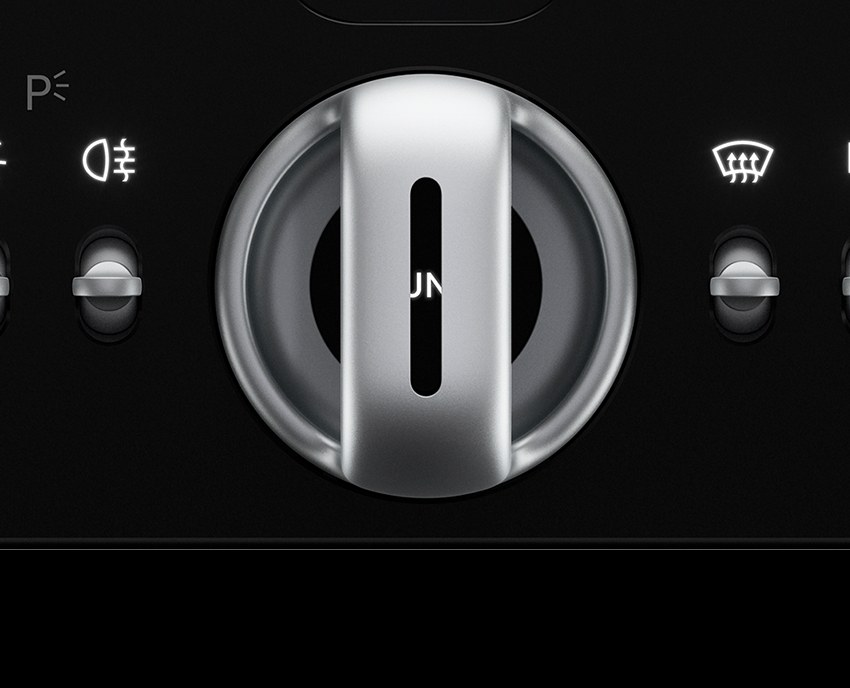
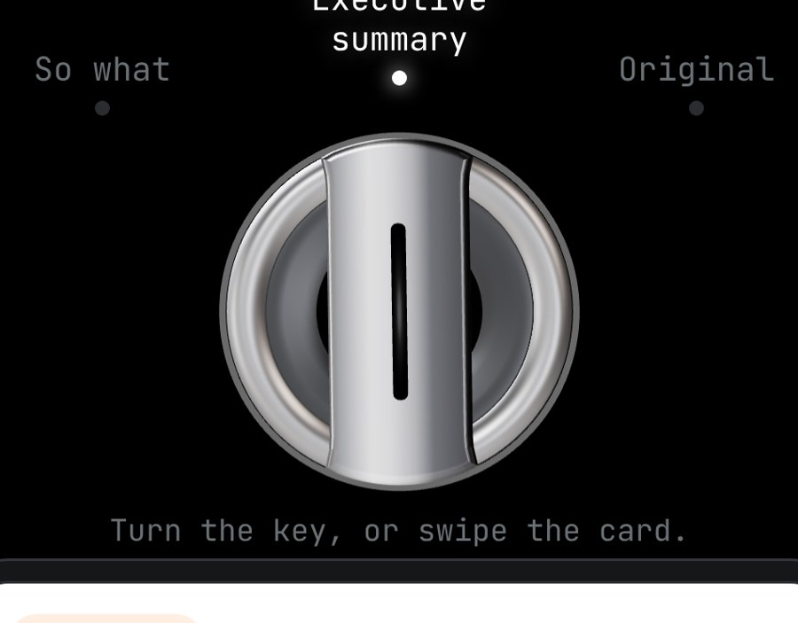
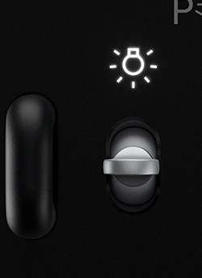
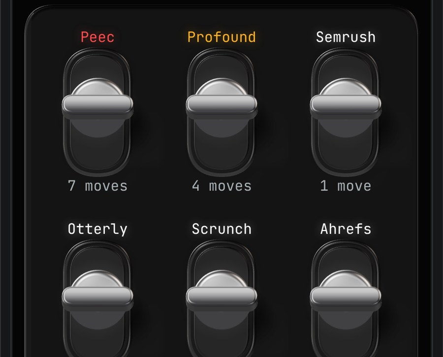

Luce controls: reference vs Nubble
Top: your Ferrari Luce reference. Below: the same control as it renders on the Nubble page today.
Depth key

Luce reference

Nubble, live 3D
Rival levers

Luce reference (the toggle on the right)

Nubble, live 3D
Touch them live on the page